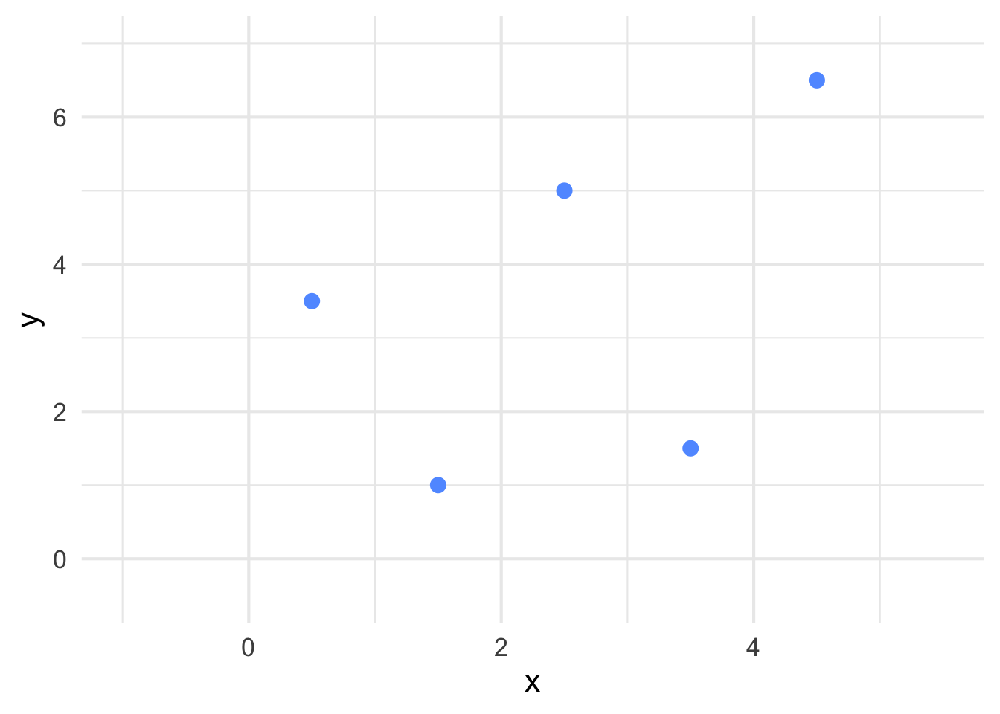
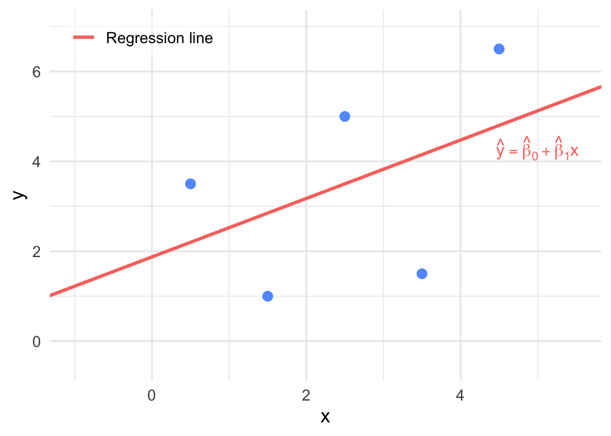
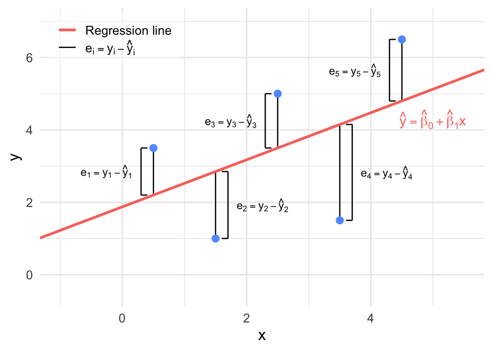
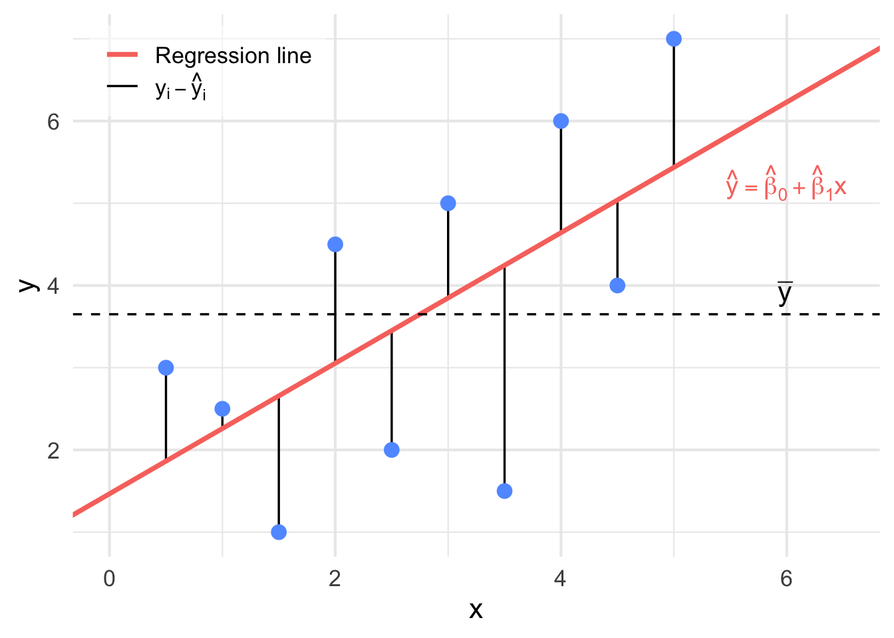
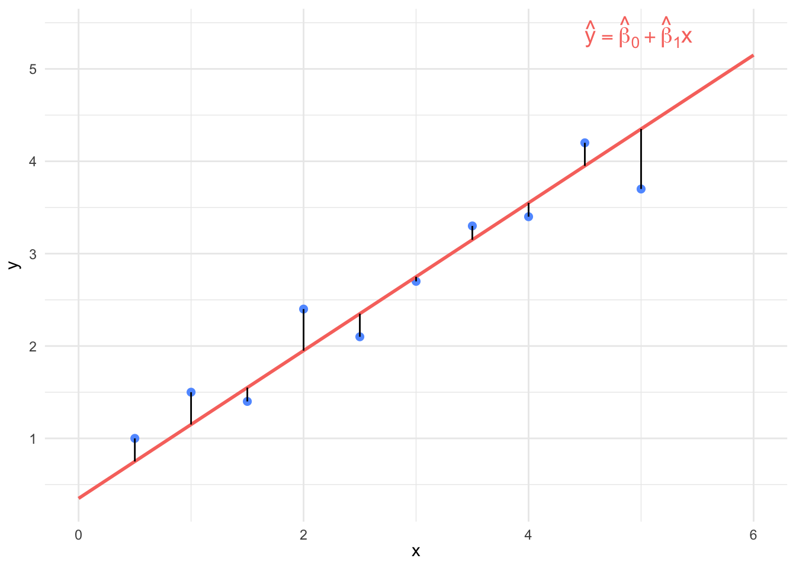

Chapter 9 Simple Linear Regression
9.1 Introduction to the Linear Model
A linear model is a function the form
\[y_i = \beta_0 + \beta_1 x_{i1} + \beta_2 x_{i2} + \ldots + \beta_p x_{ip} + \varepsilon_i, \quad \varepsilon_i \sim N(0, \sigma^2)\]
where \(y\) is the response (also called the outcome or dependent) variable, \((x_{i1},\dots,x_{ip})\) are the predictors (also called explanatory or independent variables or covariates) and \(\varepsilon_i\) is random error. In practice, the aim of constructing a linear model is usually prediction using the \(x_{ij}\) to predict \(y\), and to conduct statistical inference to assess whether \(y\) is related to the predictors, such as testing for association. In this mode, \(x_{ij}\) are assumed fixed, \(y_i\) are random and the error terms \(\varepsilon_i\) is independent Gaussian noise with a constant variance \(\sigma^2\). The coefficients \(\beta_0, \ldots, \beta_p\) are fixed but unknown constants.
A simple linear regression (SLR) model is a linear regression model with just 1 predictor and it has the form
\[y_i = \beta_0 + \beta_1 x_{i} \varepsilon_i, \quad \varepsilon_i \sim N(0, \sigma^2).\]
9.1.1 Least Squares Method
The method of least squares is an optimization technique used to calculate the coefficients \(\beta_0, \ldots, \beta_p\) in regression analysis. Its goal is to determine the parameters of a candidate model that make the model’s predictions as close as possible to the observed data based on some minimization criteria.
An important definition which is used in evaluating the fit of a model is the following
Definition 9.1 (Residual) A residual (\(e_{i}\)) is the distance between an observed data point \(y_i\) and a fitted value from a regression model \(\hat{y}_{i}\). \[ \begin{aligned} \text{residual} & = (\text{observed data point}) - (\text{fitted value}) \\ e_{i} & = y_{i} - \hat{y}_{i} \end{aligned} \]
The data points \((x_{i1},\dots,x_{ip}, y_{i})\) are observed values. To calculate a residual for an observed \(y_{i}\), we would plug in the \(x_{i1},\dots,x_{ip}\) values for this measurement into the model to evaluate the corresponding \(\hat{y}_{i}\). Once we have this value, we can evaluate the residual as the difference \(e_{i} = y_{i} - \hat{y}_{i}\).
Given a sample of \(n\) observations, we consider the sum of the square distances between each observed \(y_i\) and corresponding predicted \(\hat{y}_i\) (i.e. the sum of the square residuals) which is given by the model. This quantity which we minimize to find the model of best fit is called the Sum of Square Errors (SSE): \[ \begin{align} \mathrm{SSE} &= \sum_{i=1}^n e_{i}^2 \\ &= \sum_{i=1}^n \big(y_i - \hat y_i\big)^2 \\ &= \sum_{i=1}^n \bigl(y_i - (\beta_0 + \beta_1 x_{i1} + \cdots + \beta_p x_{ip})\bigr)^2. \end{align} \] The goal of the least‑squares technique is to find \(\beta_0,\dots,\beta_p\) such that the SSE is as small as possible. This can formally be written as:
\[ \begin{align} & \text{solve}\quad \min_{\beta_0,\beta_1,\dots,\beta_p}\; \frac{1}{2}\sum_{i=1}^{n}\left(y_i - \beta_0 - \sum_{j=1}^{p}\beta_j x_{ij}\right)^2\\ & \text{such that}\quad \beta_0,\dots,\beta_p \in \mathbb{R}. \end{align} \] This can also be represented in vector-matrix form as
\[ \begin{align} & \text{solve}\quad \min_{\beta\in\mathbb{R}^{p+1}} \;\frac{1}{2}\,(y - X\beta)^{\!\top}(y - X\beta) \\ & \text{such that}\quad \beta \in \mathbb{R}^{p+1}. \end{align} \] where \[ \begin{align*} &\textbf{y}\in\mathbb{R}^{n}\ \text{is a response vector }(y_1,\dots,y_n)^{\top}.\\ &\textbf{X}\in\mathbb{R}^{n\times(p+1)}\ \text{is a design matrix }[\,\mathbf{1}\ \ x_1\ \ \cdots\ \ x_p\,],\ \text{with first column of ones (intercept)}.\\ &\boldsymbol{\beta}\in\mathbb{R}^{p+1}\ \text{is a vector if parameters }(\beta_0,\beta_1,\dots,\beta_p)^{\top}.\\ \end{align*} \] Using matrix calculus, we can show the solution for the least squares optimization problem is
\[ \hat{\beta} = (X^{\top}X)^{-1} X^{\top} y \]
The resulting fitted values take the form \[ \hat y_i \;=\; \hat\beta_0 + \hat\beta_1\,x_{i1} + \cdots + \hat\beta_p\,x_{ip}. \]
Here, \(\hat\beta_0\) is the intercept which is the predicted value of \(y\) when \(x_{i1}, \ldots, x_{ip}\) are all 0, and each \(\hat\beta_j\) for \(j=1,\dots,p\) is the change in the expected response for a one‑unit increase in the corresponding predictor with all other predictor values held fixed.
In this course, we will focus on the simplest nontrivial case of a single predictor \[ \hat{y} \;=\; \beta_0 + \beta_1\,x, \] where \(\beta_0\) and \(\beta_1\) denote the intercept and slope of the fitted line.
9.1.2 Estimating Parameters for the Simple Linear Model
Let \((x_1, y_1), (x_2, y_2), \ldots, (x_n, y_n)\) be pairs of observed data points for independent variable \(x\) and dependent variable \(y\). Suppose we plot these points on coordinate axes (See Figure 9.1).

Figure 9.1: Example of points plotted on coordinate axes.
Our goal is to find the line of best fit for these points. The line of best fit will be of the form \[ \hat{y} = \hat{\beta}_{0} + \hat{\beta}_{1}x \] where \(\hat{y}\) represents all fitted points on the line, \(x\) is a value we can input into calculate a predicted \(\hat{y}\), \(\hat{\beta}_0\) is the estimate of the intercept and \(\hat{\beta}_1\) is the estimate of the slope (See Figure 9.2).

Figure 9.2: The line of best fit has now been superimposed on the points in Figure 9.1.
Recall in Section 9.1.1 that we discussed that the technique used to determine the line of best fit is to minimize the sum the squared distances between the observed \(y_{i}\)’s from our data and the fitter \(\hat{y}_{i}\)’s which are predicted from the line (See Figure 9.3).

Figure 9.3: The distances between each observed \(y_i\) and fitted \(\hat{y}_{i}\) from Figure 9.2.
The square error (SSE) for the simple linear regression model is
\[ \begin{aligned} \mathrm{SSE} &= \sum_{i=1}^{n} (y_i - \hat{y}_{i})^2\\ &= \sum_{i=1}^{n} \big(y_i - (\hat{\beta}_0 + \hat{\beta}_1x_i) \big)^2. \end{aligned} \] The find the values of \(\hat{\beta}_0\) and \(\hat{\beta}_1\) which minimizes the SSSE, we take the partial derivatives of the SSE with respect to \(\hat{\beta}_0\) and \(\hat{\beta}_1\), setting the expression to 0 and solving for each term, we obtain
Definition 9.2 For a model of the form \(y = \beta_{0} + \beta_{1}x + \varepsilon, \, \varepsilon \sim N(0, \sigma^2)\), the least square estimates for \(\beta_{0}\) and \(\beta_{1}\) are given by \[ \begin{aligned} \hat{\beta}_1 &= \frac{SS_{xy}}{SS_{xx}} = \frac{\displaystyle\sum_{i=1}^{n} (x_i - \bar{x})(y_i - \bar{y}) }{ \displaystyle\sum_{i=1}^{n} (x_i - \bar{x})^2 } = \frac{\displaystyle\sum_{i=1}^{n}x_iy_i - n\bar{x}\bar{y}}{\displaystyle\sum_{i=1}^{n}x_i^2 - n\bar{x}^2}\\ \hfill\\ \text{and}\\ \hfill\\ \hat{\beta}_0 &= \bar{y} - \hat{\beta}_1\bar{x} \end{aligned} \]
Example 9.1 Suppose an appliance store conducts a 5-month experiment to determine the effect of advertising on sales revenue. The results are shown in a table below. The relationship between sales revenue, \(y\), and advertising expenditure, \(x\), is hypothesized to follow a first-order linear model, that is, \(y = \beta_0 + \beta_1\cdot x + \varepsilon\), where \(y =\) dependent variable, \(x =\) independent variable, \(\beta_0\) y-intercept, \(\beta_1 =\) slope of the line and \(\varepsilon =\) error variable.
| Day | Number of tools (X) | Electricity costs (Y) |
|---|---|---|
| 1 | 7 | 23.80 |
| 2 | 3 | 11.89 |
| 3 | 2 | 15.89 |
| 4 | 5 | 26.11 |
| 5 | 8 | 31.79 |
| 6 | 11 | 39.93 |
| 7 | 5 | 12.27 |
| 8 | 15 | 40.06 |
| 9 | 3 | 21.38 |
| 10 | 6 | 18.65 |
a) Obtain the least squares estimates of \(\beta_0\) and \(\beta_1\), and state the estimated regression function.
b) Plot the estimated regression function and the data.
Solution:
a) \(\bar{x} = 3\), \(\bar{y} = 2\), \(S_{xx} = 10\), \(S_{xy} = 7\)
Then, the slope of the least squares line is \(\hat{\beta}_1 = \frac{S_{xy}}{S_{xx}} = 0.7\) and \(\hat{\beta}_0 = \bar{y} - \hat{\beta}_1\bar{x} = -0.1\). Thus, the least squares line is \(\hat{y} = -0.1 + 0.7x\).
b) R-code
plot(x, y, main="Scatterplot: Simple Linear Regression",
xlab="x", ylab="y", pch=19,col="blue");
abline(coef(linear.reg), col="red",lty=2);Remark.
The distinction between explanatory and response variables is essential in Least Squares Method.
The least-squares line (trendline) always passes through the point (\(\bar{x}\), \(\bar{y}\)) on the graph of \(y\) against \(x\).
The square of the correlation, \(r^2\), is the fraction of the variation in the values of \(y\) that is explained by the variation in \(x\).
Example 9.2 A tool die maker operates out of a small shop making specialized tools. He is considering increasing the size of his business and needs to know more about his costs. One such cost is electricity, which he needs to operate his machines and lights. He keeps track of his daily electricity costs and the number of tools that he made that day. These data are listed next. Determine the fixed and variable electricity costs using the Least Squares Method.
| Day | Number of tools (X) | Electricity costs (Y) |
|---|---|---|
| 1 | 7 | 23.80 |
| 2 | 3 | 11.89 |
| 3 | 2 | 15.89 |
| 4 | 5 | 26.11 |
| 5 | 8 | 31.79 |
| 6 | 11 | 39.93 |
| 7 | 5 | 12.27 |
| 8 | 15 | 40.06 |
| 9 | 3 | 21.38 |
| 10 | 6 | 18.65 |
Solution:
Step 1: Entering Data;
tools=c(7,3,2,5,8,11,5,15,3,6);
cost=c(23.80,11.89,15.98,26.11,31.79, 39.93,12.27,40.06,21.38,18.65);Step 2: Finding Slope;
Sx=sd(tools);
Sy=sd(cost);
r=cor(tools,cost);
b1=r*(Sy/Sx);
b1;
## [1] 2.245882Step 3: Finding \(y\)-intercept;
x.bar=mean(tools);
y.bar=mean(cost);
b0=y.bar - b1*x.bar;
b0;
## [1] 9.587765We can also use R-code to draw a graph:
plot(tools,cost,pch=19);
abline(least.squares$coeff,col="red");
# pch=19 tells R to draw solid circles;
# abline tells R to add trendline;Interpretation:
The slope measures the marginal rate of change in the dependent variable. In this example, the slope is \(2.25\), which means that in this sample, for each one-unit increase in the number of tools, the marginal increase in the electricity cost is \(\$ 2.25\) per tool.
The \(y\)-intercept is \(9.57\); that is, the line strikes the \(y\)-axis at \(9.57\). However, when \(x = 0\), we are producing no tools and hence the estimated fixed cost of electricity is \(\$9.57\) per day .
9.1.3 Measures of Linear Relationship
We begin be introducing a quantitaive measurement to measure the linear relationship between variavles
Covariance (Sample Covariance)
In probability theory and statistics, covariance is a measure of the joint variability of two random variables. The covariance sign shows the direction of the linear relationship between two variables. If higher values of one variable tend to occur with higher values of the other (and lower with lower), the covariance is positive, meaning the variables move in the same direction. If higher values of one variable tend to occur with lower values of the other, the covariance is negative, meaning they move in opposite directions. The size (magnitude) of the covariance reflects how much the two variables vary together, based on the variances they share.
Definition 9.3 The sample covariance for 2 variables \(X\) and \(Y\) is: \[s_{xy} = \frac{1}{n-1} \cdot \sum_{i=1}^{n} (x_i - \bar{x})(y_i - \bar{y}) = \frac{\sum_{i = 1}^{n}x_i \cdot y_i}{n -1} - \frac{n\bar{x}\bar{y}}{n-1}.\] These are the two ways to compute covariance. Both will give you the same answer.
The covariance is a measures of how two variables move together.
If covariance of two random variables is greater than \(0\), (\(cov(x,y) > 0\)), then the two random variables show the same trend. That is: if one random variable is increasing, then the other one is also increasing; while if one random variable is decreasing, then the other one is also decreasing.
If covariance of two random variables is less than \(0\), (\(cov(x,y) < 0\)), then the two random variables show the opposite trend. That is: if one random variable is increasing, then the other one is decreasing; while if one random variable is decreasing, then the other one is increasing.
If covariance of two random variables is equal to \(0\), (\(cov(x,y) = 0\)), then we say that there is no relationship (systematically linear) between the two random variables.
Note that covariance is not standardized, so it can be difficult to interpret directly.
Coefficient of Correlation
In statistics, correlation or dependence is any statistical relationship, whether causal or not, between two random variables or bivariate data. It helps us understand whether and how changes in one variable are associated with changes in another. A positive correlation means that as one variable increases, the other tends to increase as well, while a negative correlation means that one variable tends to decrease as the other increases. The degree of correlation is usually expressed with a correlation coefficient, which ranges from \(-1\) to \(+1\).
Definition 9.4 The coefficient of correlation is given by: \[r_{xy} = \frac{s_{xy}}{s_x \cdot s_y}.\] where
\(r_{xy}\) , is the sample correlation coefficient;
\(s_{xy}\) , is the sample covariance;
\(s_{x}\) , is the sample standard deviation of \(x\);
\(s_{y}\) , is the sample standard deviation of \(y\).
The correlation r measures the strength and direction of the linear association between two quantitative variables \(x\) and \(y\). Although you calculate a correlation for any scatter plot, \(r\) measures only straight-line relationships. In short, coefficient of correlation is a measure of the strength of the linear relationship between two random variables.
- If \(r_{xy} \approx +1\), then we say that the two random variables have strong positive correlation (See Figure 9.4).
Figure 9.4: An illustration of strong negative correlation (\(r_{xy} \approx +1\)).
- If \(r_{xy} \approx -1\), then we say that the two random variables have strong negative correlation. (See figure 9.5)
Figure 9.5: An illustration of strong negative correlation (\(r_{xy} \approx -1\)).
- If \(r_{xy} \approx 0\), then we say that there is essentially no correlation between the two random variables. Note that if \(r \approx 0\), then it suggests a linear relationship doesn’t exist but other relationship may exist (See Figure 9.6).
Figure 9.6: An illustration of no correlation (\(r_{xy} \approx 0\)).
The interactive plot below allows us to examine the spatial arrangement of data and the resulting correlation.
Note that correlation doesn’t imply causation:
\(cor(x,y) \approx +1\) doesn’t necessarily imply on increase in \(x\) causes increase in \(y\).
\(cor(x,y) \approx -1\) doesn’t necessarily imply on increase in \(x\) causes decrease in \(y\).
Properties of Covariance and Correlation
These two values are symmetric:
\(cov(x,y) = cov(y,x)\);
\(cor(x,y) = cor(y,x)\).
Example 9.3 Five observations taken for two variables follow.
| \(x_i\) | \(y_i\) |
|---|---|
| 4 | 50 |
| 6 | 50 |
| 11 | 40 |
| 3 | 60 |
| 16 | 30 |
Compute the sample covariance.
Compute and interpret the sample correlation coefficient.
Solution:
Step 1: Compute \(\bar{x}\) and \(\bar{y}\); \(\bar{x} = 8\) and \(\bar{y} = 46\) (check this by yourself).
Step 2: Find \(s_x\) and \(s_y\).
\[s_x^2 = \frac{1}{5-1} \cdot \sum_{i = 1}^{5}(x_i - \bar{x})^2 = 29.5 \text{ and } s_y^2 = \frac{1}{5-1} \cdot \sum_{i=1}^{5}(y_i - \bar{y})^2 = 130\] Then: \(s_x = 5.4313\) and \(s_y = 11.4017\).
Step 3: Find \(s_{xy}\) and \(r\).
\[\sum_{i=1}^{5}x_i \cdot y_i = 1600, \text{ then } s_{xy} = \frac{1600}{5-1} - \frac{5\cdot8\cdot46}{5-1} = -60 \text{ and } r_{xy} = \frac{s_{xy}}{s_x \cdot s_y} = 0.9688.\]
R code
Step 1: Entering data;
X=c(4,6,11,3,16);
Y=c(50,50,40,60,30);Step 2: Finding means;
mean(X);
mean(Y);Step 3: Finding variances;
var(X);
var(Y);Step 4: Finding standard deviations;
sd(X);
sd(Y):Step 5: Finding covariance and correlation;
cov(X,Y);
cor(X,Y);9.1.4 SSE, SSR and SST
The sum squared error (SSE), sum of squares for regression (SSR) and the total sum of square (SST) are components of a model which are related to the variation in the data.
SSE (Sum of Squared Error)
Definition 9.5 For any simple linear regression model, the sum of square errors SSE measures the distance between observed data and estimated data, which is given by: \[ \mathrm{SSE} = \sum_{i=1}^{n} (y_i - \hat{y_i})^2. \]
The SSE is the sum of the squares of residuals (deviations predicted from actual empirical values of data). It is a measure of the discrepancy between the data and an estimation model. A small SSE indicates a tight fit of the model to the data.
The SSE is the variation which is not explained by the model. It is illustrated in Figure 9.7.

Figure 9.7: An illustration of \(y_i - \hat{y}_{i}\). when these distances are squared and added together, we get the SSE.
SSR (Sum Square Regression)
Definition 9.6 For any simple linear regression, the distance between the mean of dependent value and estimated dependent value is called sum square regression (SSR), which is given by \[ \mathrm{SSR} = \sum_{i=1}^{n}(\hat{y_i} - \bar{y})^2. \]
The SSR is the variation which is explained by the model. It measures the distance between estimated value (estimated dependent data) and the mean of dependent data (\(\bar{y}\)). It is illustrated in Figure 9.8.

Figure 9.8: An illustration of \(y_i - \bar{y}\). when these distances are squared and added together, we get the SSR.
SST (Total Sum of Squares)
Definition 9.7 For any simple linear regression model, SST (Total sum of squares) measures the sum over all squared differences between the observations and their overall mean \(\bar{y}\) is given by: \[ \mathrm{SST} = \sum_{i=1}^{n}(y_i - \bar{y})^2. \]
The SST is the sum of the squared differences between the observations and their overall mean \(\bar{y}\) in the data. This is illustrated in Figure 9.9.
Figure 9.9: An illustration of \(\hat{y}_i - \bar{y}\). when these distances are squared and added together, we get the SST.
The app below allows us to show or hide each of these component on one plot.
Summary
The total variation (SST) can be decomposed as the sum of the variation explained by the model (SSR) and the variation which is not explained by the model (SSE):
\[ \begin{aligned} SST &= SSR + SSE \\ \sum_{i=1}^{n}(y_i - \bar{y})^2 &= \sum_{i=1}^{n}(\hat{y_i} - \bar{y})^2 + \sum_{i=1}^{n}(y_i - \hat{y_i})^2 \end{aligned} \].
Coefficient of Determination (\(r^2\))
Moreover, we can use SST, SSE and SSR to calculate another value which is important in simple linear regression, that is coefficient of determination. It is proportion of variability in \(y\) which is explained by \(x\).
Definition 9.8 We define the coefficient of determination as the sum of squares due to the regression divided by the total sum of squares. \[r^2 = \frac{SSR}{SST} = 1 - \frac{SSE}{SST}.\] The coefficient of determination can be interpreted as the proportion of the variation in \(Y\) that is explained by the regression relationship of \(Y\) with \(X\) (or the proportion of the total corrected sum of squares explained by the regression). Note that: \(0 \leq r^2 \leq 1.\)
9.2 Inference for Simple Linear Regression
In previous chapters, we focused on estimating regression parameters and interpreting the fitted line. In this chapter, we take a step further by conducting formal inference on the slope and intercept of a simple linear regression model. We examine the distribution of errors, assess variability, and introduce the idea of using hypothesis tests and confidence intervals to evaluate whether the linear relationship observed in the data is statistically significant.
We begin by introducing the regression model and exploring the assumptions necessary to perform inference on the coefficients, particularly the slope.
\[Y = \beta_0 + \beta_1 X + \varepsilon, \quad \varepsilon \sim \mathcal{N}(0, \sigma^2)\]
Can perform inference on \(\beta_0\) and \(\beta_1\), however we are usually more interested in \(\beta_1\)
What does the error term \(\varepsilon \sim \mathcal{N}(0, \sigma^2)\)
mean?
At each value of \(X\), the errors are distributed normally with a
mean of zero and a constant variance.
Can verify with residual plots (assumptions).
We estimate \(\sigma^2\) with a value we call \(s^2\) which we use for inference.
9.2.1 Estimating Variance in Linear Regression
\[Y = \beta_0 + \beta_1 X + \varepsilon, \quad \varepsilon \sim \mathcal{N}(0, \sigma^2)\]
Estimate \(\sigma^2\) with \(S^2\):
\[s^2 = \frac{\sum_{i=1}^n e_i^2}{n - 2} = \frac{\sum_{i=1}^n (y_i - \hat{y}_i)^2}{n - 2} = \frac{SSE}{n - 2}\]
A natural question to ask is why we divide by \(n-2\) in the calculation of \(s^2\). The reason is that we are estimating 2 unknown parameters in the model (both \(\beta_0\) and \(\beta_1\) are unknown) and since the calculation of \(s^2\) uses estimates of both parameters, we lose 2 degrees of freedom.
Remark. We can use \(s{x}, \, s{y}, \, \bar{x}, \, \bar{y}\) and \(r\) to calculate the least square estimators using
\[ \begin{aligned} \hat{\beta}_1 & = r \frac{s_y}{s_x} \\ \text{and} \\ \hat{\beta}_0 & = \bar{y} - \hat{\beta}_1 \bar{x} \end{aligned} \]
Example 9.4 Suppose an appliance store conducts a 5-month experiment to determine the effect of advertising on sales revenue. The results are shown in a table below. The relationship between sales revenue, \(y\), and advertising expenditure, \(x\), is hypothesized to follow a first-order linear model, that is,
\[y = \beta_0 + \beta_1 x + \varepsilon\]
where
\[\begin{aligned} y & = \text{dependent variable} \\ x & = \text{independent variable} \\ \beta_0 & = \text{$y$-intercept} \\ \beta_1 & = \text{slope of the line} \\ \varepsilon & = \text{error variable} \end{aligned}\]
| Month | Expenditure \(x\) (hundreds) | Revenue \(y\) (thousands) |
|---|---|---|
| 1 | 1 | 1 |
| 2 | 2 | 1 |
| 3 | 3 | 2 |
| 4 | 4 | 2 |
| 5 | 5 | 4 |
The question is how can we best use the information in the sample of five observations in our table to estimate the unknown \(y\)-intercept \(\beta_0\) and slope \(\beta_1\)?
We are given: \[\bar{x} = 3, \quad \bar{y} = 2, \quad S_x = 1.5811, \quad S_y = 1.2247, \quad S_{xy} = 1.75\]
Then, the slope of the least squares line is
\[b_1 = r \frac{S_y}{S_x} = (0.9037) \left( \frac{1.2247}{1.5811} \right) = 0.7\]
and
\[b_0 = \bar{y} - b_1 \bar{x} = 2 - (0.7)(3) = -0.1\]
The least squares line is thus:
\[\hat{y} = -0.1 + 0.7x\]
9.2.2 Confidence Intervals and Hypothesis Tests
We have \(n\) observations on an explanatory variable \(x\) and a response variable \(y\). Our goal is to study or predict the behavior of \(y\) for given values of \(x\).
For any fixed value of \(x\), the response \(y\) varies according to a Normal distribution. Repeated measures \(y\) are independent of each other.
The mean response \(\mu_y\) has a straight-line relationship with \(x\): \(\mu_y = \beta_0 + \beta_1 x\). The slope \(\beta_1\) and intercept \(\beta_0\) are unknown parameters.
The standard deviation of \(y\) (call it \(\sigma\)) is the same for all values of \(x\). The value of \(\sigma\) is unknown. The regression model has three parameters, \(\beta_0\), \(\beta_1\), and \(\sigma\).
Thus, if \[\hat{y}_i = \hat{\beta}_0 + \hat{\beta}_1 x_i\] is the predicted value of the \(i\)th \(y\) value, then the deviation of the observed value \(y_i\) from \(\hat{y}_i\) is the difference \(y_i - \hat{y}_i\) and the sum of squares of deviations to be minimized is
\[SSE = \sum_{i=1}^{n} (y_i - \hat{y}_i)^2 = \sum_{i=1}^{n} [y_i - (\hat{\beta}_0 + \hat{\beta}_1 x_i)]^2.\]
The quantity SSE is also called the sum of squares for error. \[\begin{aligned} \text{Fitted Value:} \quad & \hat{y}_i = \hat{\beta}_0 + \hat{\beta}_1 x_i \\ \text{Residual:} \quad & \hat{\varepsilon}_i = y_i - \hat{y}_i \end{aligned}\]
The regression standard error is
\[s = \sqrt{\frac{1}{n - 2} \sum \text{residual}^2} = \sqrt{\frac{1}{n - 2} \sum_{i=1}^{n} (y_i - \hat{y}_i)^2} = \sqrt{\frac{SSE}{n - 2}}\]
Use \(s\) to estimate the unknown \(\sigma\) in the regression model
The standard error of \(\hat{\beta}_1\) is the standard deviation of the sampling distribution of \(\hat{\beta}_1\) (estimate of slope \(\beta_1\)):
\[SE(\hat{\beta}_1) = \frac{s}{\sqrt{\sum_{i=1}^{n} (x_i - \bar{x})^2}} = \frac{s}{\sqrt{(n - 1) s_x^2}}\]
Confidence Interval for the Slope
\[\hat{\beta}_1 \pm t_{(n-2, \, \alpha/2)} \cdot SE(\hat{\beta}_1) \quad = \quad \hat{\beta}_1 \pm t_{(n-2, \, \alpha/2)} \cdot \frac{s}{\sqrt{\sum_{i=1}^{n} (x_i - \bar{x})^2}}\]
Example 9.5 Revisit the example on advertising and sales and construct a 95% confidence interval on the slope. Provide an interpretation of the CI.
From earlier: \[\hat{y} = -0.1 + 0.7x\]
| \(x\) | \(y\) | \(\hat{y}\) | \(y - \hat{y}\) | \((y - \hat{y})^2\) | \((x - \bar{x})^2\) |
|---|---|---|---|---|---|
| 1 | 1 | 0.6 | 0.4 | 0.16 | 4 |
| 2 | 1 | 1.3 | -0.3 | 0.09 | 1 |
| 3 | 2 | 2.0 | 0.0 | 0.00 | 0 |
| 4 | 2 | 2.7 | -0.7 | 0.49 | 1 |
| 5 | 4 | 3.4 | 0.6 | 0.36 | 4 |
We are given: \[\sum x_i = 15, \quad \bar{x} = \frac{15}{5} = 3, \quad SSE = 1.10, \quad \sum (x_i - \bar{x})^2 = 10\]
Step 1: Estimate variance and standard deviation \[s^2 = \frac{SSE}{n-2} = \frac{1.10}{5 - 2} = 0.3667 \quad \Rightarrow \quad s = \sqrt{0.3667} = 0.6055\]
Step 2: Compute standard error of \(\hat{\beta}_1\) \[SE(\hat{\beta}_1) = \frac{s}{\sqrt{\sum (x_i - \bar{x})^2}} = \frac{0.6055}{\sqrt{10}} = 0.1914\]
Step 3: Determine critical \(t\)-value
\[n - 2 = 3, \quad \alpha = 0.05, \quad \alpha/2 = 0.025 \Rightarrow \quad t_{(3, 0.025)} = 3.182\]
Step 4: Construct CI for the slope \[\hat{\beta}_1 \pm t_{(n-2, \alpha/2)} \cdot SE(\hat{\beta}_1) = 0.7 \pm 3.182 \cdot 0.1914 = 0.7 \pm 0.6092\]
\[\Rightarrow \text{CI: } (0.0908, \; 1.3092)\]
Interpretation: We are 95% confident the slope (\(\beta_1\)) for this model lies between 0.0908 and 1.3092.
| Suppose CI: | \((-, -)\) Suggests \(\beta_1\) has a negative sign. Suggests negative correlation, potentially good model. |
| Suppose CI: | \((+, +)\) Suggests \(\beta_1\) has a positive sign. Suggests positive correlation, potentially good model. |
| Suppose CI: | \((-, +)\) \(\beta_1 = 0\) is plausible. Suggests no linear relationship between \(x\) and \(y\). |
In cases where the CI does not contain zero, we can infer the sign of the slope (just not the steepness)
The regression standard error is
\[s = \sqrt{\frac{1}{n - 2} \sum_{i=1}^n (y_i - \hat{y}_i)^2} = \sqrt{\frac{SSE}{n - 2}} = \sqrt{\frac{1.1}{3}} = 0.6055\]
Use \(s\) to estimate the unknown \(\sigma\) in the regression model
A level \(C\) confidence interval for the slope \(\beta_1\) of the true regression line is
\[\hat{\beta}_1 \pm t^* SE(\hat{\beta}_1)\]
In this formula, the standard error of the least-squares slope \(\beta_{1}\) is
\[SE(\hat{\beta}_1) = \frac{s}{\sqrt{\sum (x_i - \bar{x})^2}} = \frac{s}{\sqrt{(n - 1) SS_{xx} }}\]
and \(t^*\) is the critical value for the \(t(n - 2)\) density curve with area \(C\) between \(-t^*\) and \(t^*\).
Hypotheses: \[\begin{aligned} H_0\!: \beta_1 = 0 \quad & \text{vs.} \quad H_a\!: \beta_1 > 0 \\ H_0\!: \beta_1 = 0 \quad & \text{vs.} \quad H_a\!: \beta_1 < 0 \\ H_0\!: \beta_1 = 0 \quad & \text{vs.} \quad H_a\!: \beta_1 \neq 0 \quad \text{\textit{(most common)}} \end{aligned}\]
Test Statistic: \[t = \frac{\hat{\beta}_1 - 0}{SE(\hat{\beta}_1)} = \frac{\hat{\beta}_1}{\dfrac{s}{\sqrt{\sum_{i=1}^n (x_i - \bar{x})^2}}}\]
Reference distribution: \(t\) distribution with \(n - 2\) degrees of freedom.
Note: A test statistic always follows the form: \[\text{test stat} = \frac{\text{statistic} - \text{hypothesized value}}{\text{SE(statistic)}}\]
Example 9.6 For the advertising example, perform a two-sided hypothesis test on the slope.
Hypotheses: \[H_0\!: \beta_1 = 0 \qquad H_a\!: \beta_1 \neq 0\]
Test Statistic: \[t^* = \frac{\hat{\beta}_1 - 0}{\dfrac{s}{\sqrt{\sum (x_i - \bar{x})^2}}} = \frac{0.7 - 0}{0.6055 / \sqrt{10}} = 3.6558\]
Reference Distribution: \(t\) distribution with \(n - 2 = 5 - 2 = 3\) degrees of freedom.
Decision Rule:
Using a two-tailed test: \[\text{p-value} = 2 \cdot P(T_3 > 3.6558) < 0.01 \Rightarrow \text{p-value} < 0.05\]
Conclusion: Since \(p\)-value \(< 0.05\), we reject \(H_0\) and conclude \(H_a\!: \beta_1 \neq 0\).
Interpretation: The slope should be included in the model. There is significant evidence of a linear relationship between advertising and sales revenue
For the advertising-sales example, a 95% Confidence Interval for the slope \(\beta_1\) is \[0.7 \pm 3.182 \left( \frac{0.6055}{\sqrt{10}} \right)\] \[0.7 \pm 0.6092\]
Thus, we estimate with 95% confidence that the interval from 0.0908 and 1.3092 includes the parameter \(\beta_1\).
We can also test hypotheses about the slope \(\beta_1\). The most common hypothesis is
\[H_0 : \beta_1 = 0.\]
A regression line with slope 0 is horizontal. That is, the mean of \(y\) does not change at all when \(x\) changes. So this \(H_0\) says that there is no true linear relationship between \(x\) and \(y\).
To test the hypothesis \(H_0 : \beta_1 = 0\), compute the \(t\) statistic \[t = \frac{\hat{\beta}_1}{SE({\hat{\beta}_1})}.\]
In terms of a random variable \(T\) having the \(t(n - 2)\) distribution, the P-value for a test of \(H_0\) against: \[\begin{aligned} H_a : \beta_1 \ne 0 & \quad \text{is } 2P(T > |t|). \\ H_a : \beta_1 > 0 & \quad \text{is } P(T > t). \\ H_a : \beta_1 < 0 & \quad \text{is } P(T < t). \end{aligned}\]
Example 9.7 \[\alpha = 0.05\]
\(H_0: \beta_1 = 0 \quad \text{vs} \quad H_a: \beta_1 > 0\)
\(t^* = \displaystyle\frac{\hat{\beta}_1}{SE(\hat{\beta}_1)} = \displaystyle\frac{0.7}{0.1914} = 3.6572\)
\(P\text{-value} = P(T > t) = P(T > 3.6572) \quad \text{d.f.} = n - 2 = 5 - 2 = 3.\)
Using t-distribution table, \(0.01 < P\text{ value} < 0.025\)Since \(P\text{-value} < \alpha = 0.05\), we reject \(H_0\).
Our example (different \(H_a\)) \[\alpha = 0.05\]
\(H_0: \beta_1 = 0 \quad \text{vs} \quad H_a: \beta_1 \neq 0\)
\(t^* = \frac{b_1}{SE_{b_1}} = \frac{0.7}{0.1914} = 3.6572\)
\(P\text{-value} = 2P(T > |t|) = 2P(T > 3.6572) \quad \text{d.f.} = n - 2 = 5 - 2 = 3.\)
Using Table 3, \(0.02 < P\text{ value} < 0.05\)Since \(P\text{-value} < \alpha = 0.05\), we reject \(H_0\).
R code
x = c(1, 2, 3, 4, 5);
y = c(1, 1, 2, 2, 4);
mod = lm(y~x);
summary(mod);R Output
##
## Call:
## lm(formula = y~x)
##
## Residuals:
## 1 2 3 4 5
## 4.000e-01 -3.000e-01 -3.886e-16 -7.000e-01 6.000e-01
##
## Coefficients:
## Estimate Std. Error t value Pr(>|t|)
## (Intercept) -0.1000 0.6351 -0.157 0.8849
## x 0.7000 0.1915 3.656 0.0354 *
## ---
## Signif. codes: 0 ‘***’ 0.001 ‘**’ 0.01 ‘*’ 0.05 ‘.’ 0.1 ‘ ’ 1
##
## Residual standard error: 0.6055 on 3 degrees of freedom\[\hat{y} = \hat{\beta}_0 + \hat{\beta}_1 x = -0.10 + 0.70x\] \[SE(\hat{\beta}_1) = 0.1915\]
By default, R conducts the following test for each coefficient:
\[\begin{aligned} H_0&: \beta_j = 0 \\ H_a&: \beta_j \ne 0 \quad \text{(two sided)} \end{aligned}\]
Test statistic: \[t^* = \frac{\hat{\beta}_j - 0}{SE(\hat{\beta}_j)}\]
For advertising and sales data: \[\begin{aligned} H_0&: \beta_1 = 0 \\ H_a&: \beta_1 \ne 0 \end{aligned}\]
\[t^* = \frac{\hat{\beta}_1 - 0}{SE(\hat{\beta}_1)} = \frac{0.70}{0.1915} = 3.656\]
Review
\[\begin{aligned} y &= \beta_0 + \beta_1 x + \varepsilon, \quad \varepsilon \sim N(0, \sigma^2) \\ \hat{y} &= \hat{\beta}_0 + \hat{\beta}_1 x \\ \hat{\beta}_1 &= \frac{\sum (x_i - \bar{x})(y_i - \bar{y})}{\sum (x_i - \bar{x})^2} = \frac{s_{xy}}{s_{xx}} \\ \hat{\beta}_0 &= \bar{y} - \hat{\beta}_1 \bar{x} \\ \end{aligned}\]
r: coefficient of correlation (strength)
r\(^2\): coefficient of determination (% variability)
\[\begin{aligned} s^2 &= \frac{\sum_{i=1}^n (y_i - \hat{y}_i)^2}{n - 2} = \frac{SSE}{n - 2} \\ s &= \sqrt{s^2} \\ SE(\hat{\beta}_1) &= \frac{s}{\sqrt{s_{xx}}} \\ CI &: \hat{\beta}_1 \pm t_{n - 2, \alpha/2} \cdot SE(\hat{\beta}_1) \\ \end{aligned}\] Hypothesis test: \[\begin{aligned} H_0 &: \beta_1 = 0 \\ \text{Test stat:}\quad t &= \frac{\hat{\beta}_1 - 0}{SE(\hat{\beta}_1)} \end{aligned}\]
We square all three deviations for each one of our data points, and sum over all \(n\) points. Here, cross terms drop out, and we are left with the following equation:
\[\sum_{i=1}^{n}(y_i - \bar{y})^2 = \sum_{i=1}^{n}(y_i - \hat{y}_i)^2 + \sum_{i=1}^{n}(\hat{y}_i - \bar{y})^2\]
\[\text{SST} = \text{SSE} + \text{SSR}\]
Total sum of squares = Sum of squares for error + Sum of squares for regression
\[\begin{aligned} SSE &= \sum_{i=1}^{n} (y_i - \hat{y}_i)^2 \\ &= \sum_{i=1}^{n} (y_i - \bar{y})^2 - \hat{\beta}_1 \sum_{i=1}^{n} (x_i - \bar{x})(y_i - \bar{y}) \\ &= S_{YY} - \hat{\beta}_1 S_{XY} \end{aligned}\]
Notice that this provides an easier computational method of finding SSE
R output (Additional example)
> summary(model);
Call:
lm(formula = camrys$Price ~ Odometer, data = camrys)
Residuals:
Min 1Q Median 3Q Max
-0.68679 -0.27263 0.00521 0.23210 0.70071
Coefficients:
Estimate Std. Error t value Pr(>|t|)
(Intercept) 17.248727 0.182093 94.72 <2e-16 ***
Odometer -0.066861 0.004975 -13.44 <2e-16 ***
---
Signif. codes: 0 ‘***’ 0.001 ‘**’ 0.01 ‘*’ 0.05 ‘.’ 0.1 ‘ ’ 1
Residual standard error: 0.3265 on 98 degrees of freedom
Multiple R-squared: 0.6483, Adjusted R-squared: 0.6447
F-statistic: 180.6 on 1 and 98 DF, p-value: < 2.2e-169.2.3 ANOVA Table for Simple Linear Regression
Analysis of Variance (ANOVA) is a statistical method used to assess whether variation in a response variable can be explained by predictor variables in a regression model. It summarizes sources of variation using sums of squares, degrees of freedom, and mean squares in a structured table format.
| Source of Variation | Sum of Squares | Degrees of Freedom | Mean Square | Computed F |
|---|---|---|---|---|
| Regression | SSR | 1 | SSR | \(\dfrac{SSR}{SSE / (n - 2)}\) |
| Error | SSE | \(n - 2\) | \(s^2 = \dfrac{SSE}{n - 2}\) | |
| Total | SST | \(n - 1\) |
For the general multivariate regression model: \[\begin{aligned} Y &= \beta_0 + \beta_1 X_1 + \beta_2 X_2 + \cdots + \beta_p X_p + \varepsilon, \\ &\quad \varepsilon \sim N(0, \sigma^2) \end{aligned}\] with \(p\) predictors
ANOVA can be used for testing: \[\begin{aligned} H_0&: \beta_1 = \beta_2 = \cdots = \beta_p = 0 \\ H_a&: \text{At least one } \beta_j \ne 0, \quad j = 1, \ldots, p \end{aligned}\]
Test Statistic: \[\begin{aligned} F &= \dfrac{MSR}{MSE} = \dfrac{SSR/p}{SSE / (n - p - 1)} \sim F(p, n - p - 1) \end{aligned}\]
Reference distribution: \(F\) with numerator df = \(p\), denominator df = \(n - p - 1\)
Example 9.8 We fitted a simple linear regression model using:
x = c(1,2,3,4,5);
y = c(1,1,2,2,4);
mod = lm(y~x);
anova(mod);The ANOVA output was:
## Analysis of Variance Table
##
## Response: y
## Df Sum Sq Mean Sq F value Pr(>F)
## x 1 4.9 4.9000 13.364 0.03535 *
## Residuals 3 1.1 0.3667
## ---
## Signif. codes:
## 0 ‘***’ 0.001 ‘**’ 0.01 ‘*’ 0.05 ‘.’ 0.1 ‘ ’ 1Interpretation:
The regression model includes one predictor \(x\), so the degrees of freedom for regression is 1.
The sum of squares for regression is \(SSR = 4.9\), and for residuals \(SSE = 1.1\).
Mean squares are calculated as: \[MSR = \frac{SSR}{1} = 4.9, \quad MSE = \frac{SSE}{n - 2} = \frac{1.1}{3} = 0.3667\]
The F-statistic is: \[F = \frac{MSR}{MSE} = \frac{4.9}{0.3667} \approx 13.364\]
The p-value is \(\approx 0.03535\), indicating that the predictor is significant at the 5% level.
Conclusion: Since the p-value is less than 0.05, we reject \(H_0\) and conclude that \(x\) has a statistically significant linear relationship with \(y\).
Example 9.9 We consider data on apartments near UTM, with price (in thousands of dollars), area (in 100 square feet), and number of beds and baths.
| Price | Area | Beds | Baths |
| (\(\times 1000\)) | (\(\times 100\) sq ft) | ||
| 620 | 11.0 | 2 | 2 |
| 590 | 6.5 | 2 | 1 |
| 620 | 10.0 | 2 | 2 |
| 700 | 8.4 | 2 | 2 |
| 680 | 8.0 | 2 | 2 |
| 500 | 5.7 | 1 | 1 |
| 760 | 12.0 | 2 | 2 |
| 800 | 14.0 | 3 | 1 |
| 660 | 7.3 | 2 | 1 |

Figure 9.10: Plot of Price vs Area for Apartments near UTM
| Price | Area | \((x-\bar{x})\) | \((y-\bar{y})\) | \((x-\bar{x})(y-\bar{y})\) | \((x-\bar{x})^2\) |
|---|---|---|---|---|---|
| 620 | 11.0 | 1.8 | -38.9 | -70.02 | 3.24 |
| 590 | 6.5 | -2.7 | -68.9 | 186.03 | 7.29 |
| 620 | 10.0 | 0.8 | -38.9 | -31.12 | 0.64 |
| 700 | 8.4 | -0.8 | 41.1 | -32.88 | 0.64 |
| 680 | 8.0 | -1.2 | 21.1 | -25.32 | 1.44 |
| 500 | 5.7 | -3.5 | -158.9 | 556.15 | 12.25 |
| 760 | 12.0 | 2.8 | 101.1 | 283.08 | 7.84 |
| 800 | 14.0 | 4.8 | 141.1 | 677.28 | 23.04 |
| 660 | 7.3 | -1.9 | 1.1 | -2.09 | 3.61 |
| Sum | 82.9 | \(\sum (x - \bar{x})(y - \bar{y})\) | \(\sum (x - \bar{x})^2\) | ||
| = 1541.11 | = 60.00 |
The sample means are: \[ \begin{aligned} \bar{y} &= \frac{\sum y}{n} = \frac{5930}{9} = 658.89\\ \hfill\\ \bar{x} &= \frac{\sum x}{n} = \frac{82.9}{9} = 9.21 \end{aligned} \]
Finding the Regression Coefficients
To compute the least squares regression line, we calculate the slope and intercept using the formulas:
\[ \begin{aligned} \hat{\beta}_1 &= \frac{S_{xy}}{S_{xx}} = \frac{1541.11}{60} = 25.69 \\ \hfill\\ \hat{\beta}_0 &= \bar{y} - \hat{\beta}_1 \bar{x} = 658.89 - (25.69)(9.21) = 422.28 \end{aligned} \]
Equation of the Regression Line
Using the values above, we write the estimated regression equation as:
\[\hat{y} = \hat{\beta}_0 + \hat{\beta}_1 x = 422.28 + 25.69x\]
This equation gives the predicted apartment price (in $1000s) based on area (in 100 sq ft).
Interpretation of Coefficients
The slope \(\hat{\beta}_1 = 25.69\) means that for every additional 100 sq ft in area, we expect the apartment price to increase by approximately $25,690 on average
The intercept \(\hat{\beta}_0 = 422.28\) suggests the predicted price when the area is zero. While this has no practical interpretation in this context, it is a necessary component of the regression model.
Interpolation and Extrapolation
To estimate the price of an apartment with an area of 800 sq ft (i.e., \(x = 8\)), we compute:
\[\hat{y} = 422.28 + 25.69(8) = 627.8 \quad (\$1000)\]
Since 8 is within the range of observed values, this is an example of interpolation.
For an apartment with 2,500 sq ft (\(x = 25\)):
\[\hat{y} = 422.28 + 25.69(25) = 1064.53 \quad (\$1000)\]
This is an example of extrapolation, and such predictions should be treated with caution since they lie outside the data range
We can create a simple linear regression model in R using the lm
command:
R code
lm(y ~ x, data = data_source)The data is available in the apt_around_utm.csv file.
R code
apt = read.csv(file.choose())
# apt = read.csv("~/PATH_TO_FILE/apt_around_utm.csv")
apt_model = lm(price ~ area, data = apt)R output
> apt_model
Call:
lm(formula = price ~ area, data = apt)
Coefficients:
(Intercept) area
422.26 25.69 We can compute the residuals and the sum of squared errors (SSE) using the table below:
| \(y\) | \(x\) | \(\hat{y}\) | \(y - \hat{y}\) | \((y - \hat{y})^2\) | |
|---|---|---|---|---|---|
| 620 | 11.0 | 704.85 | -84.85 | 7198.73 | |
| 590 | 6.5 | 589.24 | 0.76 | 0.58 | |
| 620 | 10.0 | 679.16 | -59.16 | 3499.36 | |
| 700 | 8.4 | 638.05 | 61.95 | 3837.62 | |
| 680 | 8.0 | 627.78 | 52.22 | 2727.4 | |
| 500 | 5.7 | 568.69 | -68.69 | 4718.13 | |
| 760 | 12.0 | 730.54 | 29.46 | 868.17 | |
| 800 | 14.0 | 781.92 | 18.08 | 327.06 | |
| 660 | 7.3 | 609.79 | 50.21 | 2520.79 |
Recall our fitted regression model: \[\hat{y} = 25.69x + 422.26\]
\[\text{SSE} = \sum (y_i - \hat{y}_i)^2 = 25,\!697.83\]
We now conduct a hypothesis test on the slope \(\beta_1\) at the 5% significance level.
Step 1: Hypotheses \[H_0: \beta_1 = 0 \quad \text{vs.} \quad H_a: \beta_1 \ne 0\]
Step 2: Test statistic \[s^2 = \frac{SSE}{n - 2} = \frac{25,\!697.83}{7} = 3670.26\] \[s = \sqrt{3670.26} = 60.58\] \[SE(\hat{\beta}_1) = \frac{s}{\sqrt{S_{xx}}} = \frac{60.58}{\sqrt{60}} = 7.82\] \[t = \frac{\hat{\beta}_1 - 0}{SE(\hat{\beta}_1)} = \frac{25.69}{7.82} = 3.284\]
Step 3: Conclusion Using \(t\)-distribution with 7 degrees of freedom:
\[0.005 < p\text{-value} < 0.01\]
Since \(p\)-value \(< 0.05\), we reject \(H_0\) and conclude that there is sufficient evidence that \(\beta_1 \ne 0\).This suggests there is a statistically significant relationship between price and area for apartments near UTM.
Final Check: Total Sum of Squares
| \(y\) | \(x\) | \(\hat{y}\) | \((y - \hat{y})^2\) | \((y - \bar{y})^2\) | \((\hat{y} - \bar{y})^2\) | |
|---|---|---|---|---|---|---|
| 620 | 11.0 | 704.85 | 7198.73 | 2112.00 | 1512.35 | |
| 590 | 6.5 | 589.24 | 0.58 | 4850.88 | 4745.68 | |
| 620 | 10.0 | 679.16 | 3499.36 | 410.73 | 1512.35 | |
| 700 | 8.4 | 638.05 | 3837.62 | 434.20 | 1690.12 | |
| 680 | 8.0 | 627.78 | 2727.4 | 968.04 | 445.68 | |
| 500 | 5.7 | 568.69 | 4718.13 | 8136.08 | 2524.68 | |
| 760 | 12.0 | 730.54 | 868.17 | 5133.21 | 10223.46 | |
| 800 | 14.0 | 781.92 | 327.06 | 1513.47 | 19912.35 | |
| 660 | 7.3 | 609.79 | 2520.79 | 2410.45 | 1.23 |
\[SSE + SSR = SST = 25,\!697.83 + 39,\!591.06 = 65,\!288.90\] This confirms the ANOVA identity: Total = Explained + Residual
We previously estimated the model:
\[\hat{y} = 25.69x + 422.26\]
Coefficient of Determination and Correlation
\[r^2 = \frac{SSR}{SST} = \frac{39591.06}{65288.90} = 0.6063 = 60.63\%\]
Interpretation: Approximately 60.63% of the variability in price is explained by the regression model.
\[r = \pm \sqrt{r^2} = \pm \sqrt{0.6063} = \pm 0.779\]
Since \(\hat{\beta}_1 > 0\), we choose the positive root:
\[r = 0.779\]
Interpretation: There is a strong positive correlation between apartment area and price.
R code
model = lm(y~x, data = data\_source)
summary(model)R code
apt\_model = lm(price ~ area, data = apt)
summary(apt\_model)R code
Call:
lm(formula = price ~ area, data = apt)
Coefficients:
Estimate Std. Error t value Pr(>|t|)
(Intercept) 422.256 74.834 5.643 0.00078 ***
area 25.690 7.823 3.284 0.01341 *
Residual standard error: 60.59 on 7 degrees of freedom
Multiple R-squared: 0.6064, Adjusted R-squared: 0.5502
F-statistic: 10.78 on 1 and 7 DF, p-value: 0.01341Two-sided Test for Slope Coefficient
By default, R performs a two-sided test: \[H_0: \beta_1 = 0 \quad \text{vs.} \quad H_a: \beta_1 \neq 0\]
Test statistic: \[t^* = \frac{\hat{\beta}_1 - 0}{SE(\hat{\beta}_1)} = \frac{25.690 - 0}{7.823} = 3.284\]
\[t^* \sim t_{(n - 2)} \quad \text{with } df = 9 - 2 = 7\]
p-value is the total shaded area in both tails. From R output: \[\text{p-value} = 0.01341\]
Definition 9.9
Interpolation is calculating predicted values of \(y\) using our linear model while working within the range of \(x\) in which data was available to construct our model.
Extrapolation is calculating predicted values of \(y\) using our linear model outside the range of \(x\) used to obtain the linear model.
Interpolation is usually safe if we have a good linear model.
Extrapolation must be performed carefully since extrapolations that are done without any foresight can be very inaccurate.
9.2.4 Residual Plots
Residual plots are used to verify assumptions related to the error terms in a regression model.
\[Y = \beta_0 + \beta_1 X + \varepsilon, \quad \varepsilon \sim \mathcal{N}(0, \sigma^2)\]
The assumption \(\varepsilon \sim \mathcal{N}(0, \sigma^2)\) implies:
Mean of errors is 0
Constant variance of errors (homoscedasticity)
We plot the residuals: \[e_i = y_i - \hat{y}_i\] against the fitted values \(\hat{y}_i\) to assess these assumptions.
If the assumption \(\varepsilon \sim \mathcal{N}(0, \sigma^2)\) is satisfied, the residual plot should have the following features:
Random scattering: No obvious pattern in residuals.
A pattern (e.g., curve) may indicate a non-linear relationship.
Random scattering also suggests independence of errors.
Constant variance: Residuals should fall within a horizontal band, roughly half above and half below zero.
- Suggests constant variance (homoscedasticity).
No influential points or clustering: The plot should not show isolated influential observations or clustering.
Figure 9.11: Examples of residual plots which satisfy assumpations and which violate assumptions
The model is: \(Y = \beta_0 + \beta_1 X + \varepsilon\), where \(\varepsilon \sim \mathcal{N}(0, \sigma^2)\)
The relationship between \(X\) and \(Y\) is linear.
Residuals:
are independent
have constant variance
are normally distributed
These assumptions can be verified using residual plots.